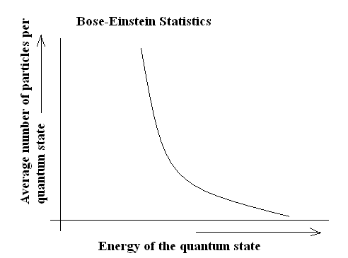

Bose-Einstein statistics
 In 1924, Einstein received a description of a statistical model from Indian physicist Satyendra Nath Bose, based on a counting method that assumed that light could be understood as a gas of indistinguishable particles. Einstein noted that Bose's statistics applied to some atoms as well as to the proposed light particles, and submitted his translation of Bose's paper to the Zeitschrift für Physik. Einstein also published his own articles describing the model and its implications, among them the Bose–Einstein condensate phenomenon that some particulates should appear at very low temperatures. It was not until 1995 that the first such condensate was produced experimentally by Eric Allin Cornell and Carl Wieman using ultra-cooling equipment built at the NIST–JILA laboratory at the University of Colorado at Boulder. Bose–Einstein statistics are now used to describe the behaviors of any assembly of bosons. Einstein's sketches for this project may be seen in the Einstein Archive in the library of the Leiden University.